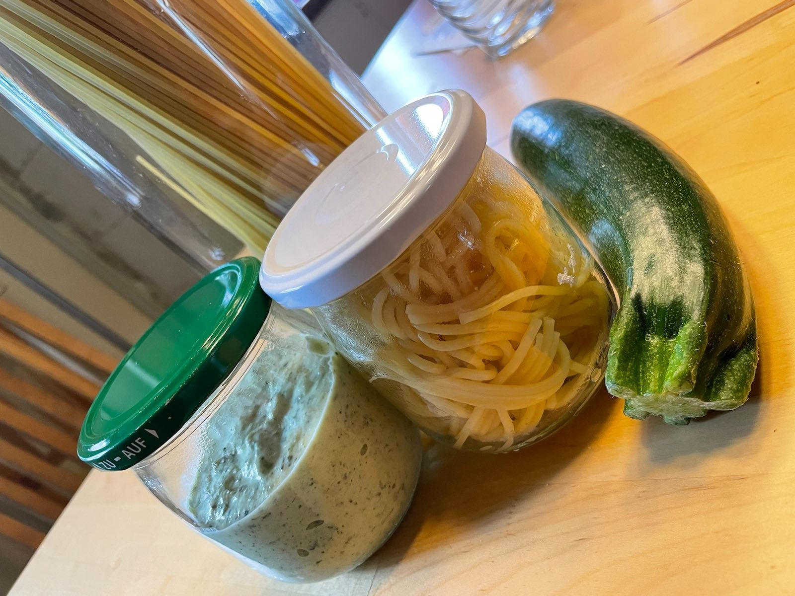

Spaghetti mit Zucchini-Käse-Creme
Nach einem Rezept von der besten Schwester von allen |

Zutaten pro Person: |
100g Spaghetti |
Die Zucchini putzen und in kleine Stücke schneiden.
Wasser für die Nudeln aufsetzen
Die Zwiebeln klein schneiden und in dem Öl anschwitzen bis sie glasig sind.
Die Zucchini in den Zwiebeln dünsten bis sie gar sind
und dann würzen und zusammen mit dem Frischkäse pürrieren bis die Creme leicht schaumig ist.
In der Zwischenzeit sind die Spaghetti fertig.
Guten Appetit
Zurück zum Inhaltsverzeichnis